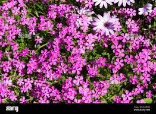

<h2>1. Create a photo gallery as shown in a below image.
Use CSS flex to allign the images side by side
Using CSS flexblox properties, ensure that even if new images are added the website flow is not broken.</h2>
<div class="photo-gallery">
       
       
       
       
       
       
       
       
</div>
     